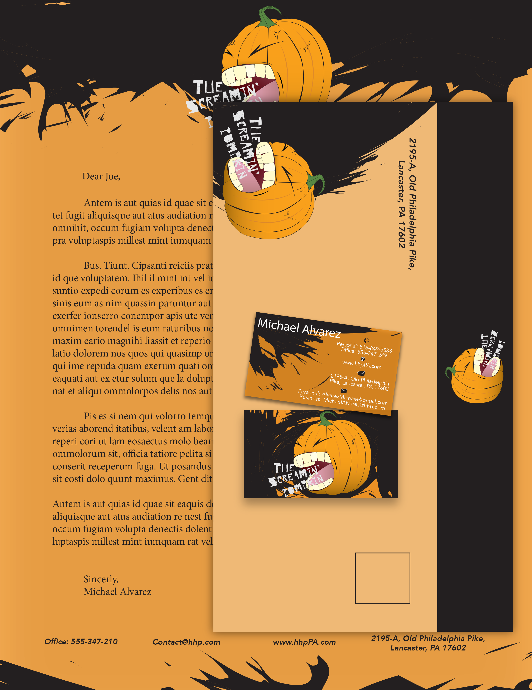

Made in InDesign and Illustrator, The Screaming Pumpkin is a fictional brewery company in Pennsylvania. The designs shown are used for letterhead, envelope and business cards. The design style I chose for this identity was grunge. I wanted it to feel strong, aggressive, and loud. As if the design was Screaming at you. Grunge isn't a style that I usually lean towards, so it felt interesting doing my research and sketches for a style that I am not entirely familiar with.


More Work